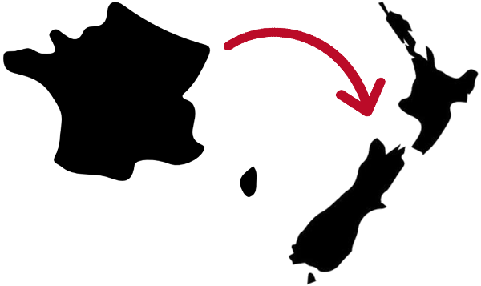

Pourquoi voyager ?
Découvrir toujours plus
Quelques année auparavant, je suis partie vivre plusieurs mois aux États-Unis puis au Brésil. J'en suis revenue riche de fantastiques découvertes et de rencontres inoubliables.
M'enrichir au contact des Autres
Lors de ces voyages, j'ai pu voir les différences - linguistiques, cliturelles ou de niveau de vie - mais surtout les similarités - de tempérament, d'idées, de goûts - avec les personnes que j'ai rencontré. Voyager est à mes yeux un des meilleurs moyens
pour développer l'ouverture d'esprit, le sens de l'observation et l'empathie.
Un défi personnel
C'est aussi un challenge lancé à moi-même, un moyen de tester mes limites face à l'inconnu et d'apprendre à être autonome dans un contexte différend chaque jour.
Aussi, lorsque cette opportunité de voyager s'est de nouveau présentée à moi, je l'ai aussitôt saisie !
La préparation
Le choix de la Nouvelle Zélande
Le choix du pays des Kiwis, comme les habitants se surnomment eux-mêmes, s'est fait petit-à-petit sur la base de différents
critères :
- un pays anglophone,
- une île,
- un climat tempéré,
- une agricliture bien développée,
- un pays éloigné de l'Europe, où j'ai déjà beaucoup voyagé
mais surtout :
- la nature luxuriante,
- les paysages extraordinaires,
- l'accueil chaleureux des habitants,
- la qualité de vie
La logistique
Après discussion avec mon employeur, nous sommes tombés d'accord sur un départ 6 mois plus tard, lui laissant le temps de pallier à mon départ.
Ma
préparation s'est donc accéléré afin d'être prête en septembre, avec :
- demande de visa,
- obtention du permis de conduire (juste à temps !),
- achat du billet d'avion,
- inscriptions aux assurances santé et rapatriement,
- vérification des vaccins et bilan médical,
- résiliation des abonnements aux téléphone, internet gaz, électricité, ...
- remplissage soigneux de la valise (23 kg pour 1 an de voyage c'est un challenge !),
- dernière visite à la famille et aux amis.

Et c'est parti !
Le voyage m'a amené de Toulouse à Auckland, en passant par Paris et Shanghai en 50 longues heures.
Après quelques jours pour me remettre de ce trajet, la découverte de la Nouvelle-Zélande et d'Auckland peut commencer.
Pour la découvrir aussi, cliquez
ici.
A très bientôt !